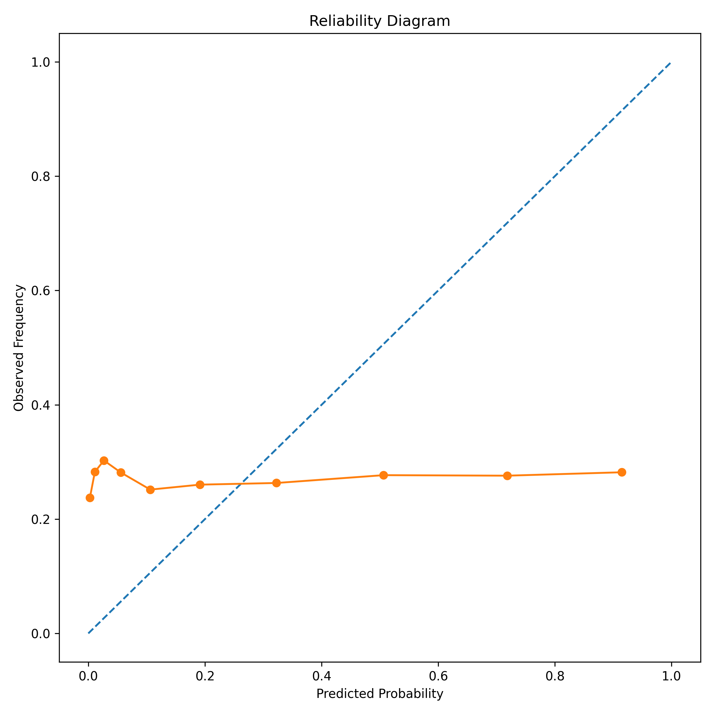
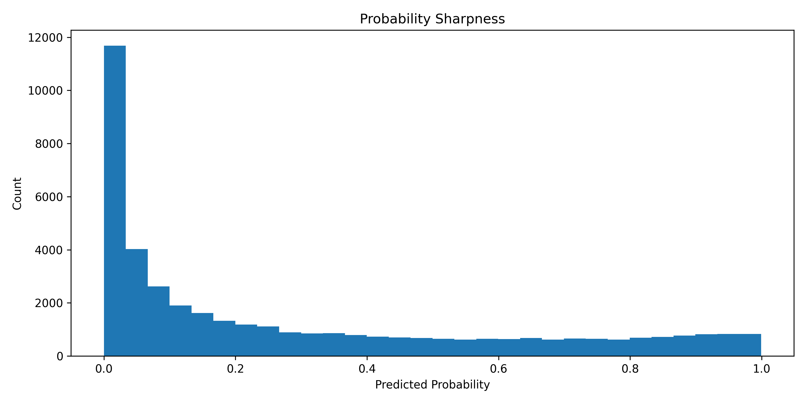
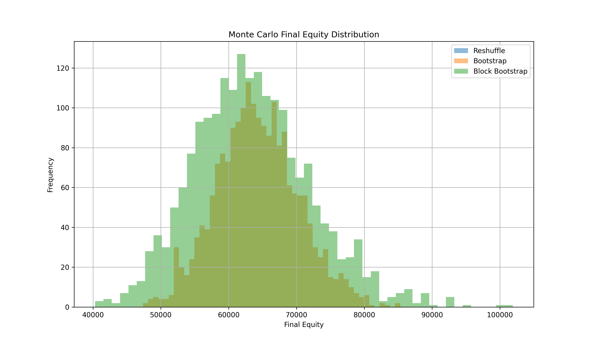
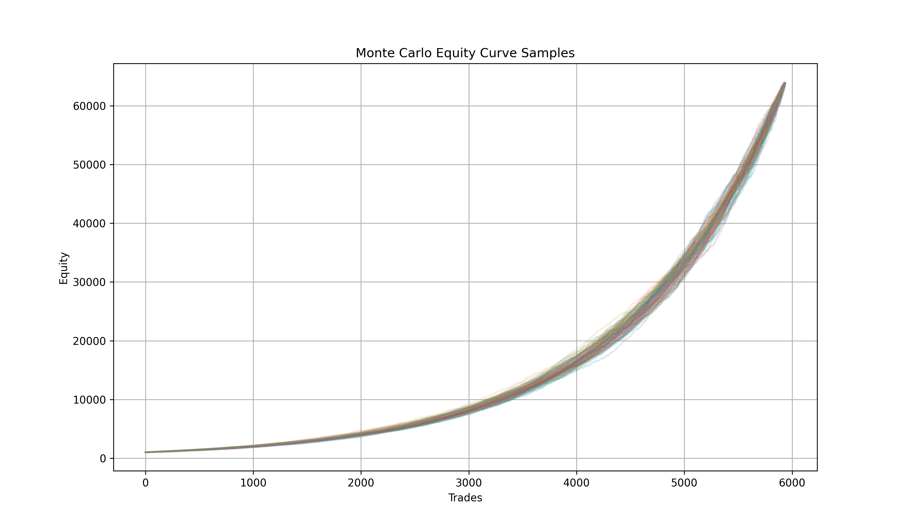

2 Statistical Due Diligence
2.1 Objective
Full institutional-grade statistical due diligence over the S4BTC engine before live deployment, leverage scaling, or external capital allocation. Source: statistics/README.md.
Questions this audit answers:
- Does the strategy possess statistically significant edge?
- Is the edge robust across regimes?
- Is the system overfit?
- Can the strategy survive realistic market frictions?
- Is the edge scalable with leverage and sizing?
- Can the edge survive randomized sanity tests?
- Does the strategy exhibit conditional alpha or structural alpha?
2.2 Baseline System Snapshot
Dataset: BTCUSDT 1H, ~33,140 observations, 2022-2026. Walk-forward: 180-day rolling train window, 14-day test step, EV-based trade selection, leverage-aware risk constraints.
| Metric | Value (per statistics/README.md) |
|---|---|
| Final Equity | $7,989 |
| Starting Equity | $1,000 |
| CAGR | ~72% |
| Winrate | 64.65% |
| Trades | 2,968 |
| Mean Accuracy | 61.63% |
| Mean F1 | 0.218 |
| Mean Precision | 0.286 |
| Mean Recall | 0.266 |
| Max Drawdown (Daily) | -2.04% |
| Max Drawdown (Intraday) | -2.14% |
| Worst Daily Return | -0.40% |
Note: these figures differ from walk_summary.json (a later run). See Appendix - Data Reconciliation. Flagged, not yet resolved.
2.3 Priority 1 - Probability Calibration Audit
Objective: validate whether predicted probabilities correspond to realized outcomes: detect overconfidence, probability drift, threshold distortion, false certainty.
Files: calibration.py, calibration_table.csv, reliability_diagram.png, probability_sharpness.png, confidence_analysis.csv.
Finding: predicted probabilities were overconfident. High-confidence predictions did not translate into proportionally higher realized winrates; confidence bins clustered near 0.50.
| Avg Confidence | Realized Winrate |
|---|---|
| 0.49 | 0.23 |
| 0.47 | 0.30 |
| 0.45 | 0.28 |


Recalibration study (s4_enhancement/probabilistic_recalibration.py):
| Model | Brier | LogLoss | F1 |
|---|---|---|---|
| RAW | 0.292 | 1.031 | 0.269 |
| ISOTONIC | 0.211 | 1.121 | 0.0005 |
| PLATT | 0.210 | 1.115 | 0.0000 |
Interpretation: recalibration improved Brier score and probability consistency, but destroyed F1 classification performance. Probabilities became statistically smoother but thresholds became invalid. Future work requires EV-aware thresholds, percentile thresholds, dynamic decision boundaries, calibration-aware walk-forward integration - not literal-probability thresholds.
2.4 Priority 2 - Regime Segmentation
Objective: determine where the edge exists, where it disappears, when the strategy should deactivate.
Files: regime_segmentation.py, regime_volatility.csv, trend_regime_segmentation.py, trend_regime_report.csv, dma200_report.csv, regime_analysis.py, regime_report.csv.
Volatility regimes:
| Regime | Winrate | Avg Return |
|---|---|---|
| Q4_HIGH | 64.15% | 1.24% |
| Q3_MEDHIGH | 67.03% | 0.87% |
| Q2_MEDLOW | 63.55% | 0.59% |
| Q1_LOW | 64.45% | 0.36% |
Trend regimes:
| Regime | Winrate | Avg Return |
|---|---|---|
| BULL_TREND | 67.38% | 0.85% |
| BEAR_TREND | 64.08% | 0.74% |
| BULL_WEAK | 64.90% | 0.72% |
| BEAR_RALLY | 56.77% | 0.56% |
200 DMA regimes:
| Regime | Winrate |
|---|---|
| ABOVE_200DMA | 66.89% |
| BELOW_200DMA | 62.52% |
Interpretation: the system is not always-on alpha. It behaves as conditional regime alpha: best in bullish trend + above 200DMA + high volatility; worst in bear rallies. This motivated the meta-regime filtering research in Chapter 3.
2.5 Priority 3 - Reality Modeling (Friction Stress Test)
Objective: stress-test the system under realistic trading conditions: spread widening, slippage expansion, liquidity degradation, execution friction.
Files: reality_modeling.py, reality_modeling_report.csv.
| Scenario | Outcome |
|---|---|
| BASELINE | Extremely profitable |
| LIGHT_FRICTION | Survived |
| MEDIUM_FRICTION | Survived |
| HEAVY_FRICTION | Survived |
| EXTREME_FRICTION | Collapsed |
Interpretation: the edge survives realistic execution friction and moderate liquidity degradation, but catastrophic friction destroys profitability. Execution quality remains critical.
2.6 Priority 4 - Position Sizing Research
Objective: determine optimal leverage, Kelly sizing, volatility targeting feasibility.
Files: fractional_kelly_research.py, fractional_kelly_report.csv, vol_targeting_report.csv.
Full Kelly estimate: 0.505 - unusually high for a systematic trading system.
| Fraction | Max DD |
|---|---|
| 0.10 Kelly | -0.78% |
| 0.25 Kelly | -1.94% |
| 0.50 Kelly | -3.84% |
| 0.75 Kelly | -5.71% |
| 1.00 Kelly | -7.54% |
Interpretation: the system appears risk-scalable and leverage-tolerant, with Sharpe remaining approximately constant across leverage scaling (near-linear behavior under scaling) - atypical for overfit systems. Full Kelly introduces unnecessary volatility; fractional Kelly dramatically improves survivability.
2.7 Priority 5 - Randomized Label Sanity Check
Objective: determine whether the model extracts genuine signal or exploits noise.
Files: randomized_labels_sanity.py, randomized_labels_report.csv.
| Metric | Value |
|---|---|
| Mean Accuracy | 72.9% |
| Mean Precision | 0.044 |
| Mean Recall | 0.009 |
| Mean F1 | 0.014 |
Interpretation: when labels were randomized, predictive quality collapsed (F1 near-vanished, recall disappeared). Strong evidence the original model is not simply memorizing noise. High accuracy under randomization is a base-rate artifact (class imbalance), not a signal - F1/recall are the diagnostic metrics here.
2.8 Priority 6 - Trade Dependency Analysis
Objective: study clustering, path dependency, serial correlation, streak behavior.
Files: trade_dependency_analysis.py, trade_dependency_report.csv.
| Metric | Value |
|---|---|
| Global Winrate | 64.79% |
| Avg Win Streak | 17.94 |
| Max Win Streak | 120 |
| Avg Loss Streak | 9.75 |
| Max Loss Streak | 52 |
| Lag-1 Autocorrelation | 0.851 |
Interpretation: trades exhibit significant clustering, non-random sequencing, and persistent market-state behavior - further support for regime dependence and structural conditional alpha (rather than i.i.d. edge).
2.9 Priority 7 - White’s Reality Check / SPA
Objective: test whether the observed edge survives multiple-testing bias and data-snooping concerns.
Files: whites_reality_check.py, whites_reality_check_report.csv.
| Metric | Value |
|---|---|
| Observed Mean Return | 0.007652 |
| Std Return | 0.011966 |
| Sharpe-like | 0.6395 |
| White RC p-value | 0.506 (FAIL) |
| SPA Sign-Flip p-value | 0.000 (PASS) |
Interpretation - mixed result. White’s Reality Check fails (p=0.506), suggesting possible sensitivity to data-mining bias when benchmarked against a large universe of alternatives. The SPA sign-flip approximation passes (p=0.000). This is not definitive proof of edge, but also not a rejection. See Chapter 3 for the regime-conditional SPA re-analysis (BEAR/LATERAL/BULL, all p=0.000 vs buy-and-hold), which explains the global White RC failure as a benchmark-selection artifact (buy-and-hold in BTC’s strongest historical bull run), not model data-snooping.
2.10 Feature Significance / Stability
Objective: measure feature importance, stability, overfit indicators.
Files: feature_significance.py, feature_significance_full.csv, feature_significance_summary.csv.
Initial finding (XGBoost gain/cover importance): most features displayed unstable importance - volume, MACD derivatives, EMA structures, RSI, ATR all highly unstable. Interpretation: edge may emerge from feature interaction, not single dominant predictors; possible regime dependence; possible need for adaptive models.
Superseding finding (SHAP stability, later session - see Chapter 4): using SHAP instead of XGBoost gain/cover (methodologically superior - SHAP measures actual contribution to output), all features show CV < 0.5 (stability threshold):
| Feature | CV | Status |
|---|---|---|
| macd_diff | 0.169 | STABLE |
| rsi_14 | 0.272 | STABLE |
| atr | 0.275 | STABLE |
| macd | 0.352 | STABLE |
| macd_signal | 0.359 | STABLE |
| ema_10 | 0.373 | STABLE |
| ema_30 | 0.419 | STABLE |
Ranking by average importance: ema_30 (0.0947, structural anchor) > atr (0.0334) > macd (0.0279) > ema_10 (0.0229) > macd_diff (0.0177) > rsi_14 (0.0126) > macd_signal (0.0084). Notable event: ema_30 importance drops from 0.1005 to 0.0224 in Nov 2024 (post-election ATH breakout), with rsi_14 compensating - interpreted as healthy model adaptation, not fragility.
Note: the original (unstable) finding used XGBoost gain/cover; the later SHAP analysis supersedes it methodologically. Both are kept here since they come from different research sessions and use different feature sets - flagged for reconciliation in the Appendix.
2.11 Monte Carlo Analysis
Objective: stress-test return distribution robustness: path variability, probabilistic survivability, drawdown robustness, compounding stability.
Files: montecarlo.py, montecarlo_results.csv, montecarlo_distribution.png, montecarlo_equity_curves.png.
Three methods run: reshuffle, bootstrap, block bootstrap. Sample of results (final equity from $1,000 start, 4 runs shown):
| Method | Sample Final Equity Range |
|---|---|
| Reshuffle | ~$63,826 (constant across runs - deterministic reshuffle of fixed trade set) |
| Bootstrap | $56,253 - $65,236 |
| Block Bootstrap | $50,050 - $92,153 |


Note: these figures are approximately 8x larger than the walk-forward baseline equity ($7,989-$8,590 depending on source). This suggests the Monte Carlo in statistics/ may be running over a different (possibly longer or unfiltered) trade set than the walk-forward baseline - flagged in the Appendix for reconciliation, not yet explained.
2.12 Final Conclusions (per statistics/README.md)
The audit strongly suggests the system likely possesses genuine conditional edge:
- survives randomized labels,
- survives realistic friction,
- improves coherently under favorable regimes,
- displays structured clustering,
- remains profitable under leverage scaling.
However, the system is not yet production-grade. Remaining critical tasks: live shadow deployment, calibration-aware walk-forward, dynamic thresholds, funding/perp features, microstructure signals, order-flow integration, live execution validation (see Chapter 6 - Roadmap).
Current classification: “Research-grade promising systematic strategy” - not yet institutional production system, but substantially beyond hobby backtesting.